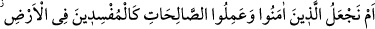
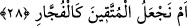
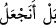
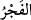
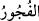

28. Yoksa biz, îman edip de iyi işler yapanları, yeryüzünde bozgunculuk yapanlar
gibi mi tutacağız? Veya (Allah’tan) korkanları yoldan çıkanlar gibi mi sayacağız?
Âyette geçen (__WORD__) edatı, (__WORD__) ve hemze-i inkâriyye anlamında olup ibâre (__WORD__)
şeklindedir. Yâni “Yoksa biz, îman edip de iyi işler yapanları, yeryüzünde
bozgunculuk yapanlar gibi mi tutacağız?” Elbette ki tutmayacağız! Bu kâfirlerin
sandığı gibi, diriliş ve cezâ bâtıl olmuş olsaydı, Allah katında ıslah edenlerle ifsâd
edenlerin durumu eşit olurdu. Bu iki grubu bir ve eşit gören biri, sefîhtir. Allah ise
sefihlikten münezzehtir. O, îmanları ve sâlih davranışları sâyesinde mü’minleri yüceler
yücesi bir makama (a’lâ-i ‘illiyyîn) yükseltecek; kâfirleri de aşağıların en aşağısına
(esfel-i sâfilîn) reddedecektir.
“Veya (Allah’tan) korkanları yoldan çıkanlar gibi mi sayacağız?” Yâni, lûtuf ve
cemâl sıfatlarımızın tezâhür yeri olan sâlih amel sâhibi mü’minleri, kahır ve celâl
sıfatlarımızın tezahür yeri olan kâfirlerle bir tutmayacağımız gibi takvâ sâhiplerini de
günahkârlarla bir tutmayacağız.
(__WORD__) lâfzı, bir şeyi genişçe yarmak; (__WORD__) ise dindarlık sırrını yarmaktır. Allah
Teâlâ âyette, önce îman ve şirk ehli arasında bir eşitlik bulunacağı fikrini inkâr ediyor,
sonra da mü’minler arasında bulunan takvâ ve hevâ ehli arasında bir eşitlik bulunacağı
fikrini. Tehdîd makamına da böylesi bir üslûb münâsip düşmektedir. Ta ki böylece her
sınıf kendi mertebesi ölçüsünde Allah Teâlâ’dan korksun. Ancak bu ikinci inkâr
ifâdesinin birincinin tekrarı mâhiyetinde olması da mümkündür. Bu durumda Cenâb-ı
Hakk’ın “Hakîm” ve “Rahîm” isimlerinin iki vasfı (hikmet ve rahmet) bu iki grubun eşit
tutulmasına mâni olması göz önünde tutulmuş olur.
Rivâyet edilir ki: Kureyş kâfirleri mü’minlere, “âhirette size verilecek mükâfatlar
bize de verilecek, hattâ bize daha fazlası verilecek” derlermiş. Allah da “Yoksa biz, ...”
âyetiyle onlara cevap vermiştir. Tabiî kâfirler, böyle bir şeyi âhiretin gerçekleşeceğini
farz ederek söylemiş olmaktadır. Nitekim bu konu “Yine, ‘Bizim mallarımız ve
çocuklarımız daha çoktur. Bize azap edilmeyecektir’ demişlerdi” (Sebe’ 34/35)
âyetinin tefsirinde geçmişti. Ayrıca bu konu ileride “Biz Müslümanları” âhiretteki
sevap bakımından “suçlular gibi kılar mıyız?” (el-Kalem 68/35) âyetinin tefsirinde de
ele alınacaktır.
Bil ki, Allah Teâlâ dünya hayatından faydalanma hususunda her iki grubu da bir
tutmakta, hattâ kâfirlere bu hayattan mü’minlere verdiğinden daha fazla pay vermektedir.